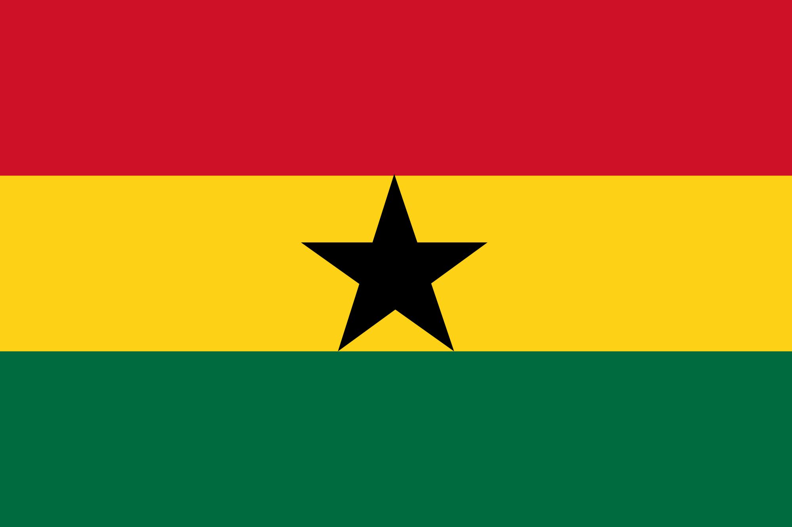

About Me
My name is Obiri Asiedu Bempa from Accra, Ghana. I am studying Software Development at Brigham Young University, specializing in web and computer programming. Alongside my studies, I work as an indexer, enhancing my skills in information management. This combination of education and professional experience prepares me for a promising career in technology. I love to reading scripturee and coding. I aspire to be better programmer.
Accra Ghana
Ghana, in West Africa, was home to ancient empires like the Ghana Empire and the Ashanti Kingdom. In the 19th century, it became the British Gold Coast colony. Led by Kwame Nkrumah, Ghana gained independence in 1957, becoming the first African nation to do so. After years of political instability, it stabilized in the 1990s and is now a democratic country known for its resources, especially gold and cocoa.